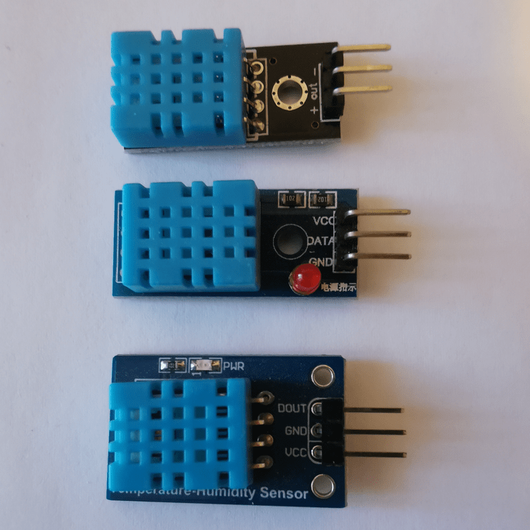
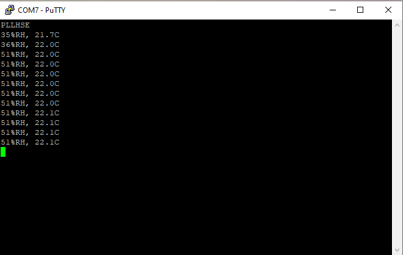

The io data line when idle need to be at high level, so a pull up resistor is necessary.
I will use 3.3V, connect DHT11 data io pin to STM32 GPIOA0. The small DHT11 boards I use all have a pull up resistor between vcc and io data.

This requirement is easy to implement based on uptime 1 second counter.
To request data, the STM32 needs to keep the io data line at low level for more than 18 ms.
Once the STM32 releases the line, the pull up will bring the level back to up and the DHT11 will assert the beginning of transmission by first pulling it down for 80 µs then up for 80 µs.
The DHT11 will transmit 40 bits (5 bytes), high bit first, encoding a zero as 50 µs low followed by 26-28 µs high and a one as 50 µs low followed by 70 µs high.
The last bit is followed by 50 µs low to signal the end of transmission and the return to idle state.
To implement this protocol on STM32 side:
The sleep granularity is 1 µs, I need to assert the line LOW for at least 18 ms, so 1 ms or even 10 ms granularity would be fine.
I add the following lines to system.h to declare the interface I am going to implement.
/* GPIOA low level API ********************************************************/
typedef enum {
LOW = 0,
HIGH
} iolvl_t ;
void gpioa_input( int pin) ; /* Configure GPIOA pin as input */
void gpioa_output( int pin) ; /* Configure GPIOA pin as output */
iolvl_t gpioa_read( int pin) ; /* Read level of GPIOA pin */
void usleep( unsigned usecs) ; /* wait at least usec µs */
I make a copy of txeie.c into gpioa.c to implement the new API.
#define IDR 4
/* GPIOA low level API ********************************************************/
void gpioa_input( int pin) { /* Configure GPIOA pin as input */
GPIOA[ MODER] &= ~(3 << (pin * 2)) ; /* Apin as input [00] */
}
void gpioa_output( int pin) { /* Configure GPIOA pin as output */
GPIOA[ MODER] |= 1 << (pin * 2) ; /* Apin output (over [00]) */
}
iolvl_t gpioa_read( int pin) { /* Read level of GPIOA pin */
return LOW != (GPIOA[ IDR] & (1 << pin)) ;
}
I didn’t use the GPIO Input Data Register (IDR) until now, so I add it
to the registers description.
gpioa_output() implementation is minimal. I know I am switching
only between input and output mode, so I don’t need to mask the bit field
first.
I use the System Tick to implement usleep().
void usleep( unsigned usecs) { /* wait at least usec µs */
#if CLOCK / 8000000 < 1
# error HCLOCK below 8 MHz
#endif
usecs = SYSTICK_CVR - (CLOCK / 8000000 * usecs) ;
while( SYSTICK_CVR > usecs) ;
}
The System Tick generates an interrupt every second but I can read the
Current Value Register (CVR) to pause for smaller time period.
As I will read the sensor just after a new second count, I know that the CVR value is close to maximum and I don’t need to care for a roll over.
SysTick input clock is HCLK/8, this implementation will work for HCLK equal to a multiple of 8 MHz (8, 16, 24, 32, 40, 48).
/* dht11.h -- DHT11 API */
typedef enum {
DHT11_SUCCESS,
DHT11_FAIL_TOUT,
DHT11_FAIL_CKSUM
} dht11_retv_t ;
/* 5 .. 95 %RH, -20 .. 60 °C */
extern unsigned char dht11_humid ; /* 5 .. 95 %RH */
extern signed char dht11_tempc ; /* -20 .. 60 °C */
extern unsigned char dht11_tempf ; /* .0 .. .9 °C */
void dht11_init( void) ;
dht11_retv_t dht11_read( void) ;
Usage:
dht11_init(), once at startup.
dht11_read(), not more often than every two seconds,
starting one second after voltage stabilizes.
/* dht11main.c -- sample DHT11 sensor */
#include <stdio.h>
#include "system.h"
#include "dht11.h"
int main() {
static unsigned last ;
dht11_init() ;
for( ;;)
if( last == uptime)
yield() ;
else {
last = uptime ;
if( last & 1) /* every 2 seconds starting 1 second after boot */
switch( dht11_read()) {
case DHT11_SUCCESS:
printf( "%u%%RH, %d.%uC\n", dht11_humid, dht11_tempc,
dht11_tempf) ;
break ;
case DHT11_FAIL_TOUT:
puts( "Timeout") ;
break ;
case DHT11_FAIL_CKSUM:
puts( "Cksum error") ;
}
}
}
dht11_retv_t dht11_read( void) {
unsigned char values[ 5] ;
/* Host START: pulls line down for > 18ms then release line, pull-up raises to HIGH */
dht11_output() ;
usleep( 18000) ;
dht11_input() ;
/* DHT START: takes line, 80µs low then 80µs high */
wait_level( LOW) ; /* HIGH -> LOW, starts 80µs low */
wait_level( HIGH) ; /* LOW -> HIGH, ends 80µs low, starts 80µs high */
/* DHT transmits 40 bits, high bit first
* 0 coded as 50µs low then 26~28µs high
* 1 coded as 50µs low then 70µs high
*/
wait_level( LOW) ; /* HIGH -> LOW, ends 80µs high, starts 50µs low */
unsigned char sum = 0 ;
unsigned char v = 0 ;
for( int idx = 0 ; idx <= 4 ; idx += 1) {
sum += v ;
v = 0 ;
for( unsigned char curbit = 128 ; curbit ; curbit >>= 1) {
/* Measure duration of HIGH level */
wait_level( HIGH) ; /* LOW -> HIGH, ends 50µs low, starts timed high */
wait_level( LOW) ; /* HIGH -> LOW, timed high ends, starts 50µs low */
/* Set bit based on measured HIGH duration */
if( duration is 70µs) /* 0 == 26~28µs, 1 == 70µs */
v |= curbit ;
}
values[ idx] = v ;
}
/* DHT STOP: releases line after 50µs, pull-up raises to HIGH */
wait_level( HIGH) ; /* LOW -> HIGH, ends 50µs low, dht has released the line */
if( sum != values[ 4])
return DHT11_FAIL_CKSUM ;
dht11_humid = values[ 0] ;
dht11_tempc = values[ 2] ;
dht11_tempf = values[ 3] ;
if( dht11_tempf & 0x80) {
dht11_tempc *= -1 ;
dht11_tempf &= 0x7F ;
}
return DHT11_SUCCESS ;
}
To turn this pseudocode into real implementation I need to code
wait_level(): wait for a line transmission and triggers a
timeout if there is none.
wait_level() as a macro, triggering a timeout when the
number of retries reach a limit. Originally, I set MAX_RETRIES to 999,
later I tune it to be large enough for the highest frequency supported
by STM32F030 (48 MHz).
#define MAX_RETRIES 200 /* at 48 MHz, 160 retries for 80 µs HIGH */
#define is_not_LOW( a) a != LOW
#define is_not_HIGH( a) a == LOW
#define wait_level( lvl) \
retries = MAX_RETRIES ; \
while( is_not_##lvl( dht11_bread())) \
if( retries-- == 0) \
return DHT11_FAIL_TOUT
wait_level() allows me to measure the duration of a wait in retries
unit. As DHT11 starts transmission by 80µs LOW followed by 80µs HIGH, I
can measure 80µs in retries unit. This is all I need to calibrate the timing
measurement.
I can do this calibration every time the DHT11 starts transmission, this way I don’t need to update some constant if I change the frequency of my system clock.
/* DHT transmits 40 bits, high bit first
* 0 coded as 50µs low then 26~28µs high
* 1 coded as 50µs low then 70µs high
*/
wait_level( LOW) ; /* HIGH -> LOW, ends, 80µs high, starts 50µs low */
int threshold = (MAX_RETRIES + retries) / 2 ;
Based on the measured duration of 80µs, I can define a threshold at
40µs. Later to identify if a bit transmitted was a 0 (26~28µs) or a 1
(70µs), I will check if its duration is below or higher than the
threshold.
wait_level( LOW) ; /* HIGH -> LOW, timed high ends, starts 50µs low */
/* Set bit based on measured HIGH duration */
if( retries < threshold) /* false == 26~28µs, true == 70µs */
v |= curbit ;
To finalize dht11_read(), I declare retries before the first
wait_level().
/* DHT START: takes line, 80µs low then 80µs high */
int retries ; /* retry counter */
wait_level( LOW) ; /* HIGH -> LOW, starts 80µs low */
There is still a bit of pseudocode left as I need to map
dht11_input(), dht11_output() and
dht11_bread() to actual GPIO peripheral, pin and low level
functions. I am using GPIOA pin 0.
/* dht11.c -- DHT11 humidity and temperature sensor reading */
#include "dht11.h" /* implements DHT11 API */
#include "system.h" /* usleep(), gpioa_*() */
#define DIO 0
#define dht11_input() gpioa_input( DIO)
#define dht11_output() gpioa_output( DIO)
#define dht11_bread() gpioa_read( DIO)
/* 5 .. 95 %RH, -20 .. 60 °C */
unsigned char dht11_humid ; /* 5 .. 95 %RH */
signed char dht11_tempc ; /* -20 .. 60 °C */
unsigned char dht11_tempf ; /* .0 .. .9 °C */
void dht11_init( void) {
dht11_input() ;
}
After adding the includes, global variables declarations and the
implementation of dht11_init(), I can build and test.
SRCS = startup.txeie.c gpioa.c dht11main.c dht11.cBuild completes successfully
$ make f030f4.elf from startup.txeie.o gpioa.o dht11main.o dht11.o text data bss dec hex filename 1877 0 24 1901 76d f030f4.elf f030f4.hex f030f4.binFlashing the board and starting execution, I can see a new output every two seconds.

The humidity value seems off the mark. So I need to investigate what’s the issue.
Next, I will investigate if the values read are correct.